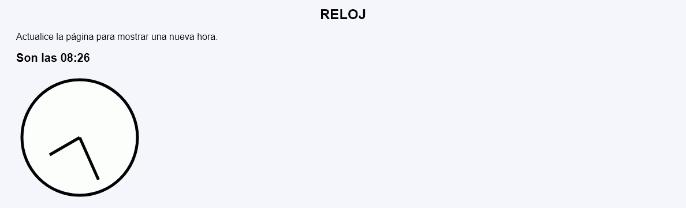
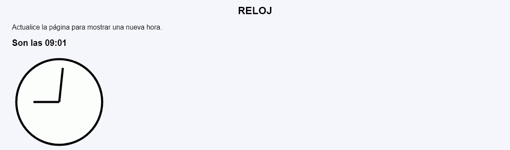
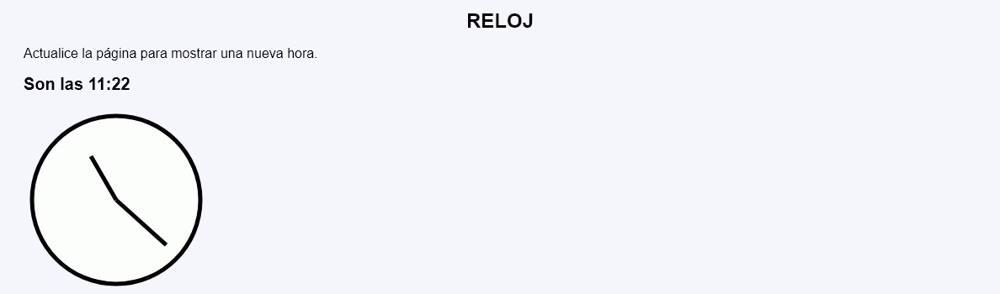

Reloj - Ejemplo de programa
Nota: El día del examen los alumnos no tienen acceso a este ejemplo, solamente tienen acceso a las capturas del apartado anterior.
Un ejemplo de programa puede probarse en la ventana siguiente:
En este ejercicio se debe crear un programa que muestre un reloj de manecillas.



<h2>Son las 00:11</h2>
<p>
<svg version="1.1" xmlns="http://www.w3.org/2000/svg"
width="220" height="220" viewBox="-110 -110 220 220">
<circle cx="0" cy="0" r="100" fill="white" stroke="black" stroke-width="5" />
<line x1="0" y1="0" x2="0" y2="-60" stroke="black" stroke-width="5" transform="rotate(0, 0, 0)" />
<line x1="0" y1="0" x2="0" y2="-80" stroke="black" stroke-width="5" transform="rotate(66, 0, 0)" />
</svg>
</p>
<h2>Son las 02:15</h2>
<p>
<svg version="1.1" xmlns="http://www.w3.org/2000/svg"
width="220" height="220" viewBox="-110 -110 220 220">
<circle cx="0" cy="0" r="100" fill="white" stroke="black" stroke-width="5" />
<line x1="0" y1="0" x2="0" y2="-60" stroke="black" stroke-width="5" transform="rotate(60, 0, 0)" />
<line x1="0" y1="0" x2="0" y2="-80" stroke="black" stroke-width="5" transform="rotate(90, 0, 0)" />
</svg>
</p>
Nota: El día del examen los alumnos no tienen acceso a este ejemplo, solamente tienen acceso a las capturas del apartado anterior.
Un ejemplo de programa puede probarse en la ventana siguiente: